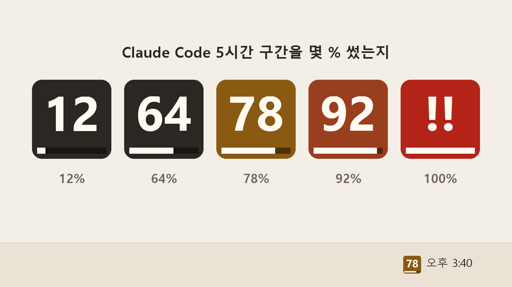

Windows 10/11 · 무료 · 오픈소스(MIT)

처음 실행할 때 Windows 가 「PC 보호」 창을 띄우면 추가 정보 → 실행을 누르세요. 서명 인증서가 아직 없어서 나오는 창입니다.
이 PC 의 Claude Code 기록(~/.claude/projects)만 읽습니다. 계정·통계 전송이 없고, 밖으로 나가는 건 폰 알림(ntfy)을 켰을 때뿐입니다.
요금제의 진짜 한도는 기록에 없어서, 기본은 최근 8일 중 가장 많이 쓴 구간을 100% 로 봅니다. 직접 숫자(예: 15M)를 정할 수도 있습니다.
구간은 ccusage 와 같은 규칙으로 나눕니다 — 첫 메시지 시각에서 시작해 5시간.
「알림 → Claude Code 와 연결(훅 추가)」을 누르면 settings.json 에 Stop·Notification 훅 둘만 넣습니다(원래 파일은 백업, 다른 훅은 그대로). 「연결 끊기(훅 제거)」는 그 둘만 뺍니다.